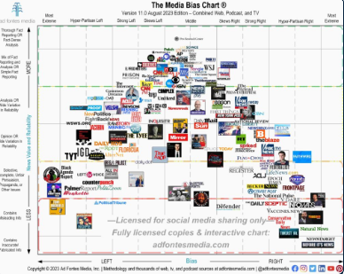

A4: Political Bias#
Choose Social Media Platform: Reddit | Discord
In this assignment, you will be trying to calculate the average political bias and reliability of posts in a subreddit.
The code you are starting with here already does a search on a subreddit and finds the reliability and political bias of url web addresses posted to subreddits. You will need to add loop variables to calculate these averages (see chapter 8 practice and demos).
After you get the averages to work, you wll then try your code on other subreddits, and then you will answer some reflection questions.
First, we’ll do our normal Reddit Praw login steps (though we’ll not use fake-praw for this assignment, only real Reddit).
Reddit PrawSetup#
import praw
(optional) make a fake praw connection with the fake_praw library
For testing purposes, we’ve added this line of code, which loads a fake version of praw, so it wont actually connect to reddit. If you want to try to actually connect to reddit, don’t run this line of code.
%run ../../../../fake_apis/fake_praw.ipynb
%run reddit_keys.py
# Give the praw code your reddit account info so
# it can perform reddit actions
reddit = praw.Reddit(
username=username, password=password,
client_id=client_id, client_secret=client_secret,
user_agent="a custom python script for user /" + str(username)
)
Fill in Bias and Reliability Info#
The first step to make this work is to fill in info for the bias and reliability of different websites.
If you open media_info.csv, you’ll see a bunch of partial website links (enough to identify which site the link is for), and then blank spots for the reliability and bias of that website news sources.
You’ll use the Media Bias chart to look up one organizations ratings of bias and reliability info for each of those sites.

So, open that file and then for each of the sites listed, fill in a number for the bias and reliability of the site (you’ll have to figure out how you want to turn bias and reliability into numbers). You can add additional sites as well if you want.
Load Bias and Reliability Info#
The code to load the bias and reliability info is in another file: a4-supporting_code.ipynb. You can look at that file if you are interested, but you are not required to.
# You can look in this file if you want to see more
# about how the file information is loaded
%run a4-supporting_code.ipynb
Get a list of results from a subreddit#
We will now get a list of results from reddit. To start with we get 20 posts from the “news” subreddit
# Look up the subreddit "news", then find the "hot" list, getting up to 100 submission
submissions = reddit.subreddit("news").hot(limit=20)
# Turn the submission results into a Python List
submissions_list = list(submissions)
TODO: Modify the code below (Run Search)#
The code below loops through each reddit submission, and if the submission was a website url, the program checks to see if we have reliability/bias info on the site. If we have that info we calculate the bias and reliability and display it.
Your job is to add loop variables to the code to calculate the number of urls we had info for (number_matched_urls) and then the total bias and total reliability for those urls. Then you can use that at the end to calculate the average bias and average reliability.
#### TODO: make three loop variables here: ####
# number_matched_urls
# total_url_bias
# total_url_reliability
# go through all the tweets
for submission in submissions_list:
print(submission.url)
# if the submission was a website url link, then we'll
if submission.url:
# try to find the source website in our dataset
matching_site = find_matching_site(submission.url)
# if we found the matching site, then we have info for it
if(matching_site):
# look up the bias and reliability for the site the url is from
url_bias = media_bias_lookup[matching_site]
url_reliability = media_reliability_lookup[matching_site]
#### TODO: Update the three loop variables here ####
print(" bias: " + str(url_bias))
print(" reliability: " + str(url_reliability))
else:
# We didn't have info on this site
print("**did not recognize site!")
print()
#### TODO: Use the loop variables to calculate the total number of urls ####
# we cold measure and then the average bias and reliability for those
# Then display them with the print statements below
print("--------------------------------------")
print("Total number of urls we could measure: ")
print("Average bias: ")
print("Average reliability: ")
example.com/fake_news_story
**did not recognize site!
example.com/pretend_story.html
**did not recognize site!
example.com/imaginary_story.html
**did not recognize site!
example.com/not_real_story.html
**did not recognize site!
--------------------------------------
Total number of urls we could measure:
Average bias:
Average reliability:
Reflection tasks#
Once you get the code above working and finding an average bias and reliability, modify the search to try at least three more subreddits (and get more posts at a time, like 100). Open up the subreddit separately and look at your results, then answer the questions below.
Note: For searches, you can search for different subreddits that might have different views and post links to news articles, like: “news”, “science”, “politics”, “liberal”, “conservative”, “tech”, “BlackLivesMatter”, etc.
What additional searches did you run (at least 3)?
TODO: Answer the question here
When doing those searches, what were your observations about the calculations of media bias and reliability? (For example: were there a lot of urls that you didn’t measure? Do you feel like the final calculated bias and reliability match the search results?). Answer with at least 3 sentences
TODO: Answer the question here with at least 3 sentences
If you could redesign the Media Bias Chart, what would you want to do (e.g., add some other dimension besides just bias/responsibility, change how it is evaluated, add more news sources, consider different countries)? Feel free to search online for critiques of the Media Bias Chart. Answer with at least 3 sentences.
TODO: Answer the question here with at least 3 sentences
What might a social media companies or advertizers (including political campaigns) want to do with information on a users’ political views and susceptibility to consipracy theories? Answer with at least 3 sentences.
TODO: Answer the question here with at least 3 sentences
Choose two ethics frameworks and use the frameworks to consider the different uses of the media bias and reliability information. Answer with at least 6 sentences total (e.g., 3 per framework).
TODO: Answer the question here with at least 6 sentences